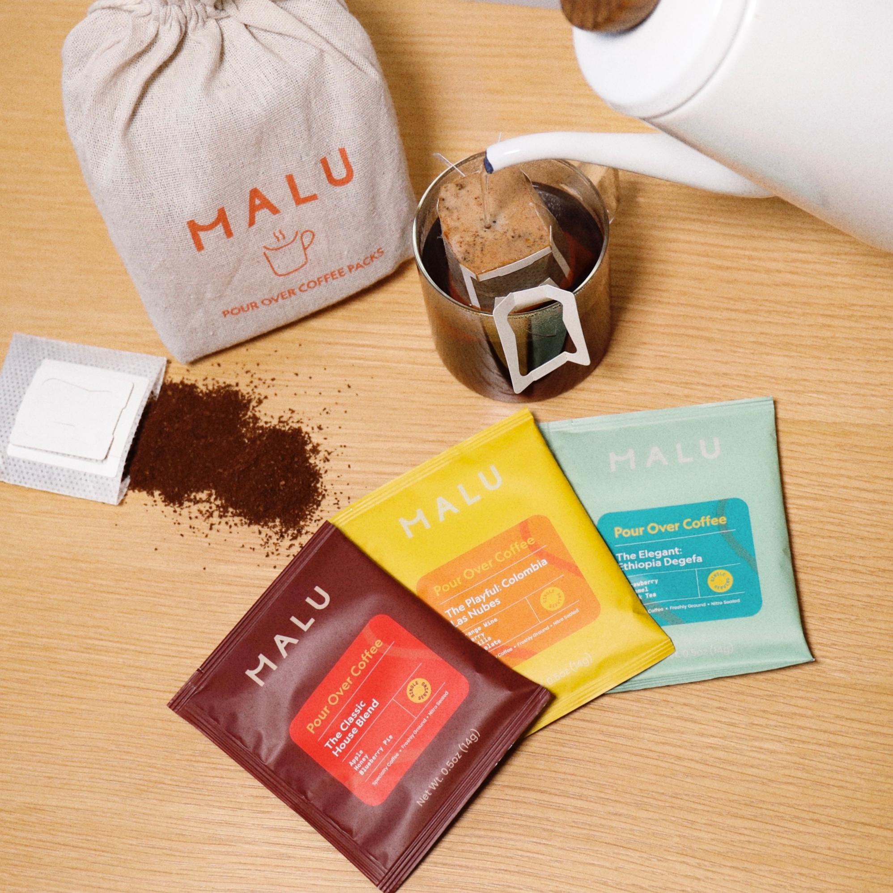
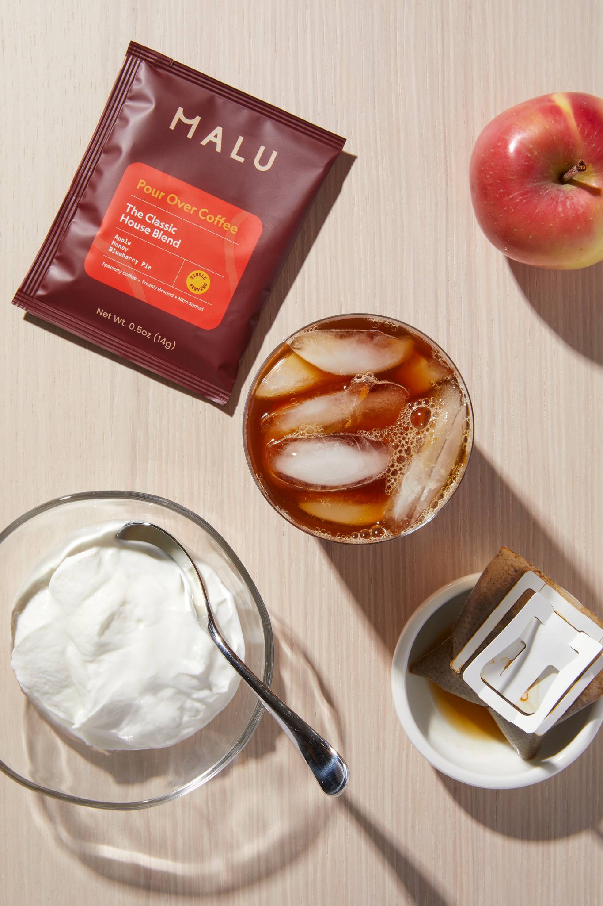
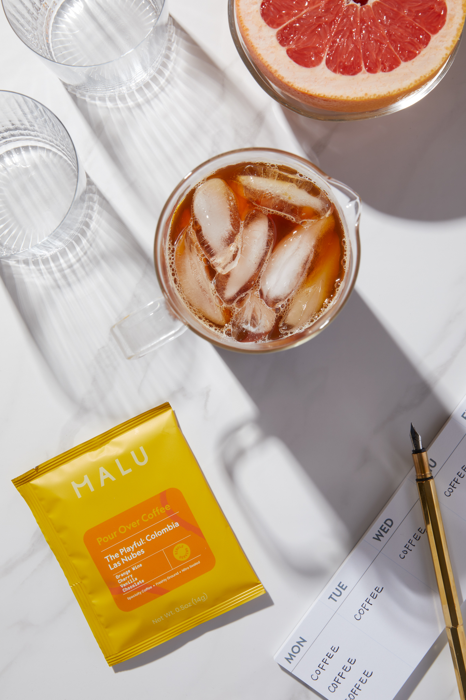

Malu Coffee was born as my pandemic brainchild, marking my first entrepreneurial journey where I created a brand and product entirely from the ground up. As the founder, I led every aspect of its development—from conceptualization to market launch. This included conducting in-depth product research, crafting a compelling creative vision, managing end-to-end production, sourcing premium coffee beans, and successful marketing endeavors, including several hotel collaborations and major media outlet features.
  Press
Outdoor: This Effortless Pour-Over Coffee Will Change Your Camping Game
Paste: Tasting: 3 Easy Pour-Over Coffee Pouches from Malu Coffee